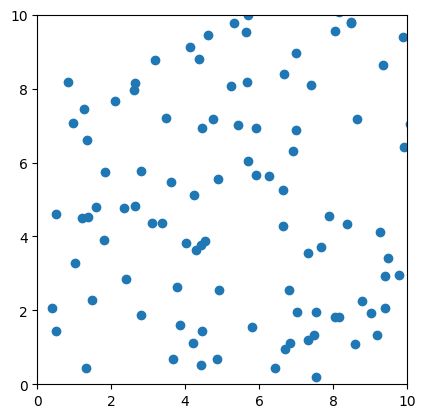

import matplotlib.pyplot as plt
import numpy as np
import matplotlib.animation as animation
fig, ax = plt.subplots()
t = np.linspace(0, 3, 40)
g = -9.81
v0 = 12
z = g * t**2 / 2 + v0 * t
v02 = 5
z2 = g * t**2 / 2 + v02 * t
scat = ax.scatter(t[0], z[0], c="b", s=5, label=f'v0 = {v0} m/s')
line2 = ax.plot(t[0], z2[0], label=f'v0 = {v02} m/s')[0]
ax.set(xlim=[0, 3], ylim=[-4, 10], xlabel='Time [s]', ylabel='Z [m]')
ax.legend()
def update(frame):
# for each frame, update the data stored on each artist.
x = t[:frame]
y = z[:frame]
# update the scatter plot:
data = np.stack([x, y]).T
scat.set_offsets(data)
# update the line plot:
line2.set_xdata(t[:frame])
line2.set_ydata(z2[:frame])
return (scat, line2)
ani = animation.FuncAnimation(fig=fig, func=update, frames=40, interval=30)
plt.show()import matplotlib.pyplot as plt
import numpy as np
import matplotlib
#matplotlib.use('TkAgg')
# P = nRT/V
# n = N/N_A
# Constants
num_particles = 100 #n
container_size = 10 # V
time_steps = 1000
particles_speed = 0.5 # ¬ kinda T
# Initial positions and velocities of particles
positions = np.random.rand(num_particles, 2)* container_size
velocities = np.random.rand(num_particles, 2)* particles_speed
# Creating our plot
fig, ax = plt.subplots()
scatter = ax.scatter(positions[:, 0], positions[:, 1], marker='o')
ax.set_xlim(0, container_size)
ax.set_ylim(0, container_size)
plt.gca().set_aspect('equal', adjustable='box')
# Simulation Loop
collisions_array = []
for step in range(time_steps):
positions += velocities
n_collision = 0
for i in range(num_particles):
for j in range(2):
if positions[i, j] < 0 or positions[i, j] > container_size:
#Collision
velocities[i, j] *= -1
n_collision += 1
collisions_array = np.append(collisions_array, n_collision)
print(f"N of collisions: {n_collision} - On average: {np.average(collisions_array):.2f}", end='\r')
if not plt.fignum_exists(fig.number):
break
scatter.set_offsets(positions)
plt.pause(0.001)
plt.show()
N of collisions: 4 - On average: 4.00N of collisions: 6 - On average: 5.00